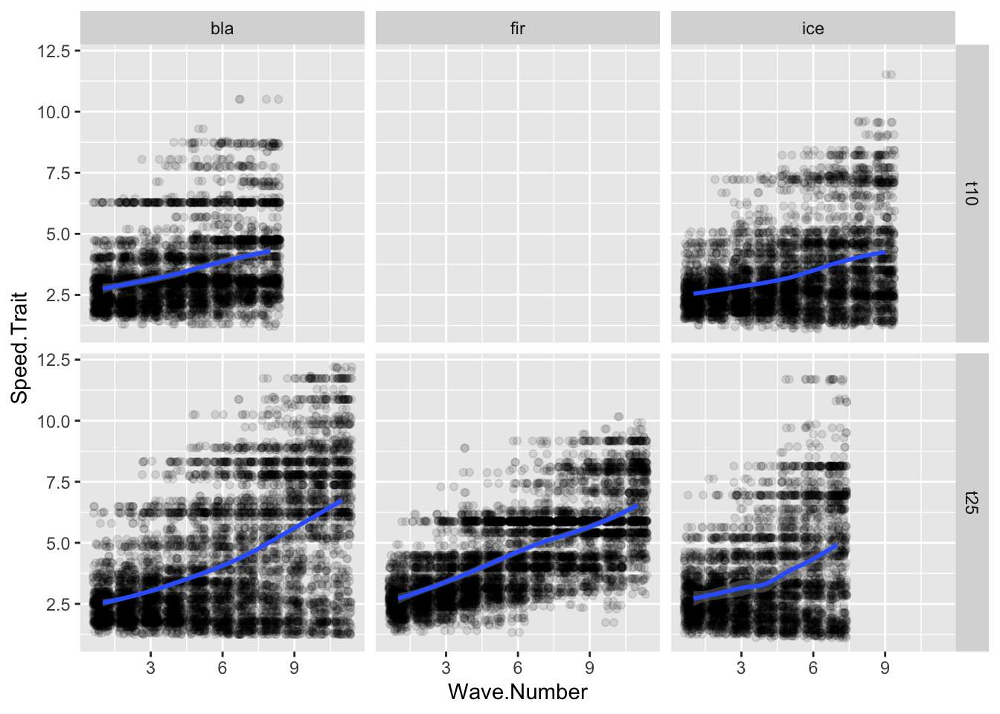
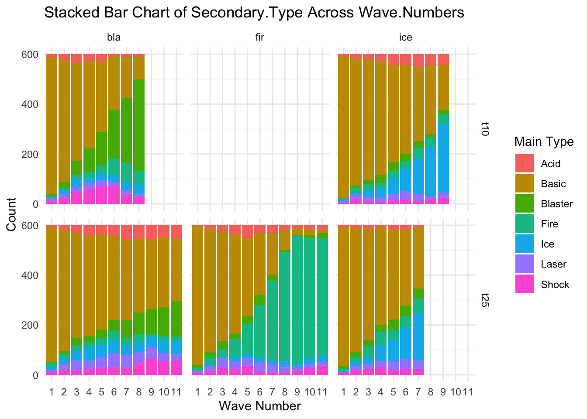

#| fig-cap: "Change in the Speed.Trait value over time."ggplot(allfiles, aes(x= Wave.Number, y = Speed.Trait))+geom_jitter(data = allfiles, aes(x=Wave.Number, y = Speed.Trait),alpha =0.1)+geom_smooth(data = sumstats, aes(x= Wave.Number, y = meanSpeed))+facet_grid(tournament~tower)
`geom_smooth()` using method = 'loess' and formula = 'y ~ x'

ggplot(allfiles, aes(x= Wave.Number, y = Turn.Rate.Trait))+geom_jitter(data = allfiles, aes(x=Wave.Number, y = Turn.Rate.Trait),alpha =0.1)+geom_smooth(data = sumstats, aes(x= Wave.Number, y = meanTurn))+facet_grid(tournament~tower)
`geom_smooth()` using method = 'loess' and formula = 'y ~ x'
Change in the Turn.Rate.Trait value over time.
ggplot(allfiles, aes(x= Wave.Number, y = Slime.Optimal.Distance.Trait))+geom_jitter(data = allfiles, aes(x=Wave.Number, y = Slime.Optimal.Distance.Trait),alpha =0.1)+geom_smooth(data = sumstats, aes(x= Wave.Number, y = meanPersonal))+facet_grid(tournament~tower)
`geom_smooth()` using method = 'loess' and formula = 'y ~ x'
Change in the Slime.Distance.Trait value over time.
ggplot(allfiles, aes(x= Wave.Number, y = Tower.Attraction.Trait))+geom_jitter(data = allfiles, aes(x=Wave.Number, y = Tower.Attraction.Trait),alpha =0.1)+geom_smooth(data = sumstats, aes(x= Wave.Number, y = meanTower))+facet_grid(tournament~tower)
`geom_smooth()` using method = 'loess' and formula = 'y ~ x'
Change in the Tower.Distance.Trait value over time.
# Assuming your data frame is named 'allfiles'# Step 1: Summarize the data to get counts of Main.Type for each Wave.Numbersummary_types <- allfiles %>%group_by(Wave.Number, Main.Type, file, tournament, tower) %>%summarise(count =n()) %>%ungroup()
`summarise()` has grouped output by 'Wave.Number', 'Main.Type', 'file',
'tournament'. You can override using the `.groups` argument.
# Step 2: Create the stacked bar chartggplot(summary_types, aes(x =factor(Wave.Number), y = count, fill = Main.Type)) +geom_bar(stat ="identity") +labs(title ="Stacked Bar Chart of Main.Type Across Wave.Numbers",x ="Wave Number",y ="Count",fill ="Main Type") +theme_minimal()+facet_grid(tournament~tower)
Change in the frequency of Main Type over time.
# Assuming your data frame is named 'allfiles'# Step 1: Summarize the data to get counts of Main.Type for each Wave.Numbersummary_types <- allfiles %>%group_by(Wave.Number, Secondary.Type, file, tournament, tower) %>%summarise(count =n()) %>%ungroup()
`summarise()` has grouped output by 'Wave.Number', 'Secondary.Type', 'file',
'tournament'. You can override using the `.groups` argument.
# Step 2: Create the stacked bar chartggplot(summary_types, aes(x =factor(Wave.Number), y = count, fill = Secondary.Type)) +geom_bar(stat ="identity") +labs(title ="Stacked Bar Chart of Secondary.Type Across Wave.Numbers",x ="Wave Number",y ="Count",fill ="Main Type") +theme_minimal()+facet_grid(tournament~tower)

Change in the frequency of Secondary Type over time.